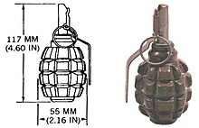

La palabra «granada» viene del latín granātum. Pasó al español para dar nombre al fruto (Punica granatum) lleno de granos y con una disposición esférica fácil de tomar. En francés se le llama pommegranate. Debido a la forma y el tamaño de este proyectil, los ejércitos europeos lo llamaron «granada de mano» en español, grenade à main en francés y hand grenade en inglés.

Historia
Desde la Antigüedad se habían usado artefactos incendiarios. En el Imperio romano de oriente se emplearon artefactos incendiarios de mano poco después del reinado de León III (717-741). Los soldados bizantinos se dieron cuenta de que el fuego griego, una invención bizantina del siglo anterior, no solamente podía usarse con un lanzallamas, sino también en jarras de piedra y cerámica. Posteriormente, se emplearon recipientes de cristal. El uso del fuego griego se difundió entre los ejércitos musulmanes en Oriente Medio, desde donde llegó a China en torno al siglo X.
En China, durante la dinastía Song (960-1279), las armas conocidas como zhen tian lei ("trueno que sacude el cielo") se crearon cuando los soldados chinos empacaron pólvora en recipientes de cerámica o metal. En 1044, el libro militar Wujing zongyao (Compilación de clásicos militares) describió varias recetas de pólvora en las que se puede encontrar, de acuerdo con Joseph Needham, el prototipo de la granada de mano moderna.Los chinos también descubrieron el potencial explosivo del embalaje de proyectiles de bala de cañón con pólvora.
En los siglos XIV, XV y XVI, en Francia, se llamaba «niños perdidos» (enfants perdus) a los que comúnmente se colocaba en los puestos avanzados de la infantería. Eran escogidos los mejores de cada «banda» (compañía). Se les armó con granadas de mano a partir de 1537. En 1667, se denominaron granaderos y destinaron cuatro a cada compañía de infantería.Los primeros granaderos llevaban un hacha, un sable y un saco con diez o doce granadas (la granadera). Cuando, en 1671, el fusil de avancarga reemplazó al mosquete, se dieron fusiles a la mayor parte de granaderos. A finales del reinado de Luis XIV, todos los granaderos llevaban fusil. Prusia fue el siguiente país que creó un cuerpo de granaderos. A este le siguieron los países del norte de Europa y, posteriormente, lo hicieron el resto de naciones. El cuerpo de granaderos francés fue suprimido en 1789.12
A finales de la guerra, las tropas de ambos bandos contaban con soldados especialmente entrenados y equipados con fusiles de francotirador. Este tipo de soldados ha jugado un papel cada vez más importante en las operaciones militares desde entonces.
Otros tipos de granadas
Las granadas químicas y de gas arden o expulsan un gas, pero no explotan.Entre estas se encuentran las granadas de humo y las granadas incendiarias.
El cóctel molotov es un artefacto improvisado similar a la granada. Fue usado por primera vez en la Guerra Civil por la Legión Española en otoño de 1936 contra tanques soviéticos a las afueras de Madrid. El nombre, del ministro de Exterior de Stalin, se le puso cuando se empleó en Finlandia en 1940.
Las granadas de práctica son similares en manipulación y uso a las otras granadas de mano, excepto que solamente producen un fuerte sonido y una nube de humo al detonar. Su carcasa es reutilizable.3738 Otro tipo es la granada de práctica de lanzamiento, que es totalmente inerte y frecuentemente vaciada en una sola pieza. Es empleada para que los soldados se acostumbren al peso y la forma de una granada verdadera, así como para practicar lanzamientos de precisión. Un ejemplo de este tipo de granada es la Granada de Mano de Práctica Biodegradable K417 surcoreana.
Boletín informativo
Suscríbete a nuestros boletines ahora y mantente al
día con nuevas colecciones y ofertas exclusivas.